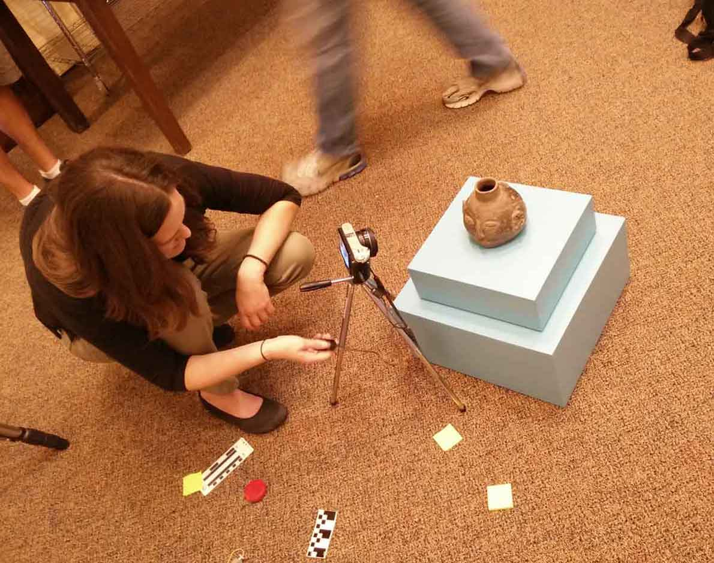
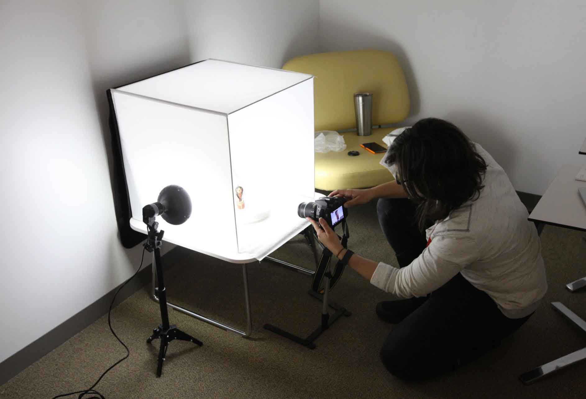
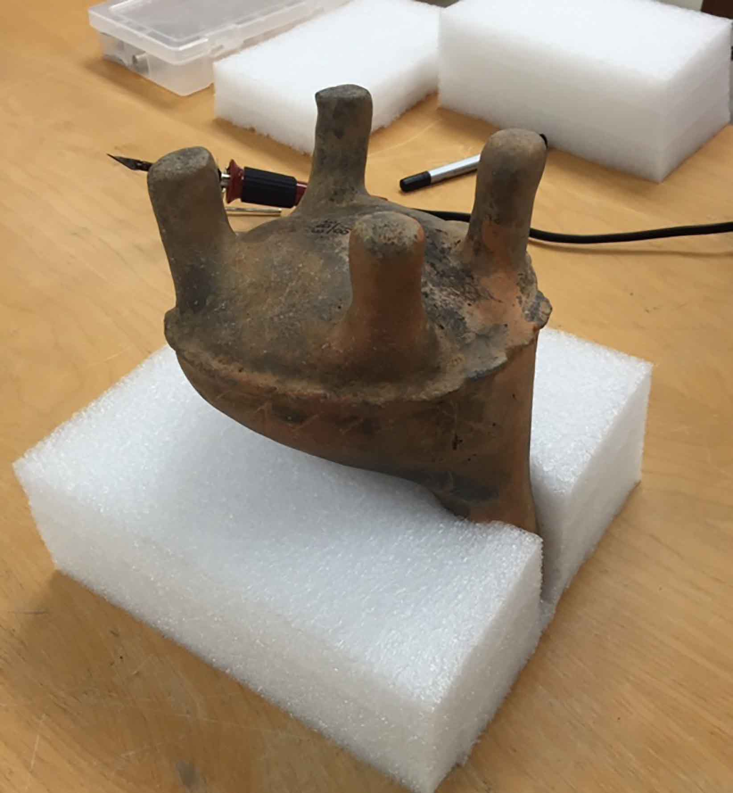
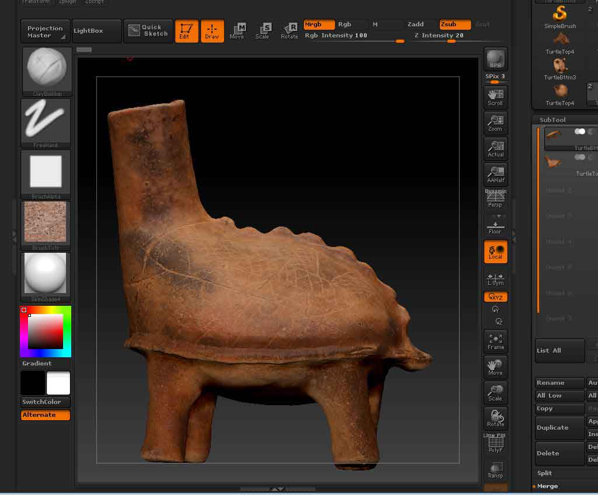
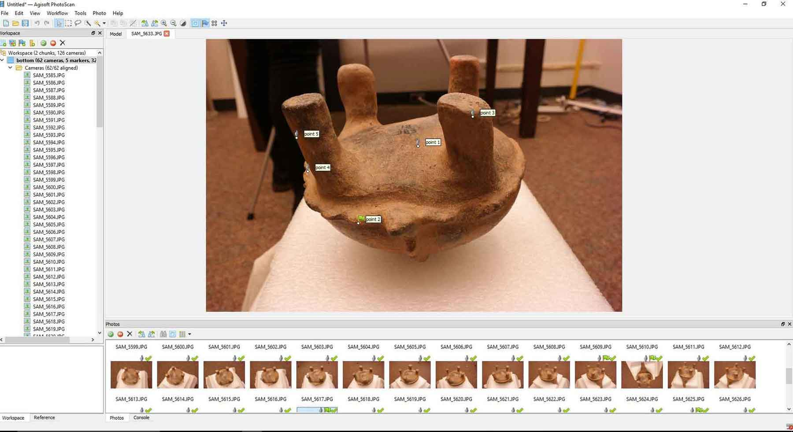
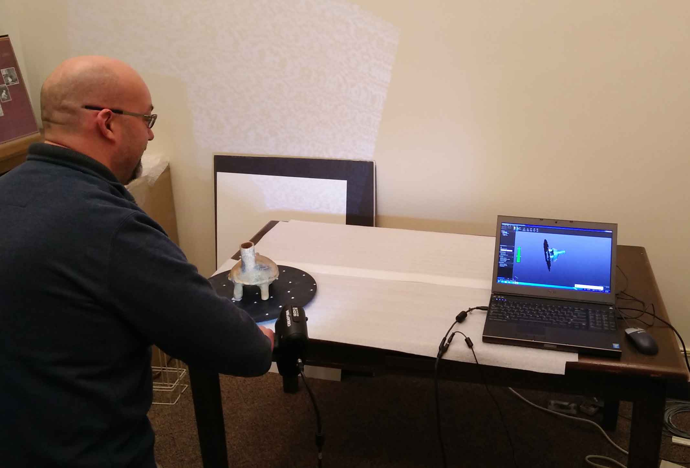
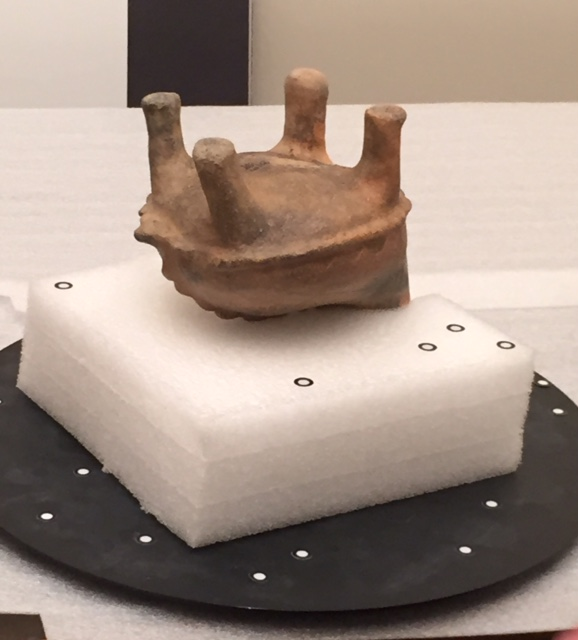

This site documents a course project in Digital Humanities to 3D model a selection of cultural heritage objects. We tested a variety of methods and tools for creating and processing these 3D models, and discuss the pros and cons of each in the Methods section of the site. For the purposes of this project, we chose to model a small sample of Mississippian ceramic effigy vessels from the collection of the Glenn A. Black Laboratory of Archaeology at Indiana University.
Effigy vessels are one of the hallmarks of the pre-Columbian Mississippian era (~800CE – 1600CE). Humans, mammals, birds, fish, amphibians, and even mythological creatures were modeled in a variety of styles and vessel forms.
Styles range from including one or more adornments that suggest certain effigy features, such as a head and tail attached to opposite sides of a bowl rim, to entire bottles and bowls formed into the shape of a head or body. Because these vessels often contain asymmetrical features, they can be best appreciated and studied by viewing them from all angles and sides. The creation of digital 3D models allows the public to dynamically view and engage with these artifacts in ways not otherwise possible when presented either in exhibit cases or in static 2D photographs. Researchers can also measure, analyze, and reconstruct these models in new and innovative ways.
To 3D model a small collection of intact ceramic effigy vessels from the Glenn A. Black Laboratory of Archaeology. To test different modeling techniques, software, and 3D viewers. We will be using photogrammetry as our main data capture method, but we also hope to explore and compare structured light scanning techniques.
Resources
All of the physical models will be ceramic effigy vessels housed at the Glenn A. Black Laboratory of Archaeology on the IU Bloomington campus. Secondary materials in the form of catalog cards and database records will be used to create appropriate metadata for the digital models.
Tools
We will use DSLR and mirrorless cameras, tripods, Autodesk Remake and Pixologic ZBrush for rendering and editing 3D models. We also hope to use the AVL GoScan laser scanner to create one or more additional models to compare this method in terms of processing requirements and results.
Consultants
Model editing – Matt Brennan, SOIC Virtual Heritage program Photogrammetry methods assistance – Gary Motz, Manager of the IU Vertebrate Paleontology Collection. 3-D scanning techniques - Jeff Rogers, Principal Project Analyst & Team Lead of the Advanced Visualization Lab. *Ethical considerations – April Sievert, Director of the Glenn A. Black Lab
Our Team
Jennifer St.Germain
Collections Manager, Glenn A. Black Laboratory of Archaeology
IDEASc Fellow
Indiana University, Bloomington
Anna VanderJagt
MLS/MIS Candidate
Cyberinfrastructure for Digital Humanities Graduate Assistant Indiana University, Bloomington
*Compatibility: Having trouble viewing these models? You can check if your browser is compatible on http://get.webgl.org/
There are a number of methods currently in use for capturing 3D data as well as a growing number of software programs and techniques for processing and editing models. Choosing among them involves evaluating data capture and processing time, technician budgeting, equipment and software costs, and necessary access to processing hardware. The size, format, material, location, and portability of objects also need to be considered. 3D projects should start with specific requirements in mind including the intended goals or research questions that may be addressed with the final product. Will the models need to represent fine detail and be rendered as accurately at possible for scientific measurement and analysis? Or are they intended mainly for public exhibition or educational purposes?
For this project, we employed two methods of data capture: photogrammetry and structured light scanning. We will discuss these approaches and highlight the strengths and limitations of both. We will also discuss differences in the rendering and editing software available for these methods.
Photogrammetry
Multi-image photogrammetry is a 3D modeling technique that uses multiple 2D images of an object to
record, measure, and match corresponding points on an object in order to build a 3D representation. Typically a series of images that incorporate overlapping views are taken from high, mid, and low angles of the object in order to record and match as many points on the surface of the object as possible. Two methods of capturing these images are to rotate the object 360 degrees in front of a static camera position (except for changes in camera height and angle) or for the camera to move 360 degrees around the static object. Which method is used will depend on the size and portability of the object, as well as lighting conditions, space constraints, and modeling software preferences. All of the models used for this project were small enough for us to experiment with both techniques.

Moving Camera

Static Camera
For the purposes of this project we started out using the AutoDesk ReMake processing software. ReMake is offered free for students and educators, has some handy built-in editing features, and can be processed fairly easily and quickly using the cloud-based build option. However, ReMake has some drawbacks in its sensitivity to image background information. Of the two techniques for camera
position, the moving camera method initially produced cleaner, more accurate meshes. Images taken while the photographer moves around the object will capture changing background information. This allows ReMake to match overlapping points and reconstruct the field of view with more accuracy.
For our testing of the alternative method, where the object is rotated instead, we used a turntable and professional light-tent. ReMake and other processing programs seem to be particularly sensitive to the changes, or lack of changes, in the background of an object using this method. To get the best results, a uniform and monochromatic backdrop needs to be used. Turntables should also be covered in the same color material, and both should contrast enough with the color of the object in order for the processing software to distinguish it properly.

Ethofoam Support
Another major consideration in our project was the need to capture images of both the top and bottom of the vessels in order to view models from any angle. Although we were able to use pre-made ethofoam supports to invert vessels in a few cases, more asymmetrical artifacts required the use of custom-made supports (made in-house by GBL staff) to capture data on their bases.
ReMake is limited in that it cannot process or merge both upright and inverted model images into one mesh. Two models, top and bottom, must be created separately in ReMake and then exported into another program, such as Pixologic's ZBrush, to create a merged model. ZBrush is a powerful digital modeling and sculpting program, but can be prohibitively expensive and has a steep learning curve. ZBrush also does not offer a point matching feature which makes it difficult to properly size, rotate, and align two objects into one seamless model.
ZBrush

Agisoft PhotoScan is another software program that can be used to process images and generate 3D models. This program allows you to import both top and bottom image series and create a single merged model without having to export files into ZBrush or other editing software. PhotoScan provides a tool for selecting matching points along the surface of the model in both series in order to more accurately align the two meshes.
PhotoScan

PhotoScan is more expensive to purchase than ReMake, only offering a 30 day free trial of its basic version and no long-term free versions for students or educators. It also requires a lot of processing power and processing time, depending on the quality desired for the final model. We processed a version of the Turtle Effigy Bottle in PhotoScan using a lower quality setting based on the time and resources available to us. The result is adequate for exhibition and educational purposes at this point, but may not be accurate or photorealistic enough for detailed research and analysis.
Structured Light Scanning

Go!Scan 50
With the assistance of Jeff Rogers from IU's Advanced Visualization Laboratory, we also experimented with structured light scanning.
This method captures data through the use of a hand-held scanner that projects light patterns across the surface of an object. The software recognizes disruptions in the pattern and uses these to reconstruct exact geometric representations of the object. Color and texture detail are also captured by a camera sensor built into the scanner. A Creaform GoScan 50 scanner was used to model 3 objects from our project, which we used to compare with the versions created with photogrammetry. As in other methods of data capture, the material, lighting, and shape of the object must be taken into consideration. Highly reflective or translucent materials can create confusion about the precise location of an object's surface.
Objects that are too symmetrical are also a problem, as the scanner may not find enough different points to properly align the image data. Special adhesive point markers can be placed on the turntable or object in these cases to help identify points.
As in PhotoScan, the Creaform software that comes with the Go!Scan allows the user to clean and edit extraneous data and includes a point matching system for aligning upright and inverted model data.

Alignment Markers
The combined GoScan data capture and processing steps provide for a faster and more streamlined workflow for 3D modeling. However, structured light scanners are a far more expensive option than photogrammetry equipment, with the GoScan 50 currently costing around $25,000. We also felt that the results from our photogrammetry versions were far more accurate in terms of surface detail and texture. In the Models section of this site, you can compare the models produced by photogrammetry vs. structured light scanning.
In the future, we hope to re-process the photogrammetry models in PhotoScan using the higher quality settings, which should improve the detail and photorealistic quality of our final models even more.
Other considerations:
Image format jpeg vs. RAW/Tiff
For this project, we captured our images in RAW, but processed all of our photogrammetry models using the jpeg file format. Although we would like to experiment with tiffs converted from RAW in the future, these large files require more powerful processing hardware and longer processing times. A few experts we spoke with (Jeff Rogers & Matt Brennan) also indicated that sometimes higher resolution images can also introduce extra noise that may make it difficult for processing software to stitch images together.
Lighting and camera settings
Often the most time-consuming element of our photogrammetry process was selecting the proper lighting and camera settings for image capture. Because we were shooting indoors, we needed to balance having enough even overhead lighting for reasonable exposure times without creating glare on the surface of the objects. Larger aperture settings are also required to capture sufficient depth of field and insure that all surfaces of the object are in focus. As this also reduces the amount of light available to the camera sensor, we used tripods and cable shutter releases in order to set longer exposure times.
See the Metadata section for more documentation on our methods and procedures.
3D Metadata
Metadata, or data about data, is essential to describing, identifying, linking, and even re-creating digital
products. At this time, there is no single, widely-adopted schema standard for capturing and sharing 3D object metadata. Many projects develop their own in-house standards depending on the type of objects and modeling processes involved. A few of the more well-known schemas that do capture 3D object and modeling metadata are CARARE, CRMdig, and ADS (Archaeological Data Service). In-house, non-standardized metadata can potentially be mapped to these schemas for harvesting and interoperability with cultural heritage portal sites such as Europeana. However, many of these larger standards are extensive and exhaustive in terms of the number of fields that can be captured. For our purposes, we developed a more light-weight schema that overlaps with many of these larger standards but also focuses more closely on categories of data we felt were more important for our project.
The main categories of metadata we captured are:
Project-level
Data Capture
Camera [EXIF]
Scanning
Processing
3D Model
Physical Model
We currently have 67 fields included under these categories, and we will continuing to refine and adjust this schema going forward. Full metadata records for the models produced for this project are available in spreadsheet format. We will also be adding to and adjusting this document as we continue to clean and process additional 3D models.